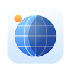

Čo robí
Na Macu Hushette býva na lište menu; na iPhone, iPade a Androide je to aplikácia, ktorá hrá ďalej aj so zhasnutou obrazovkou. Vyber si zvuky, ktoré máš rád, a nastav úroveň každého z nich: biely, ružový alebo hnedý šum, dážď, vzdialené hromy, vlny, vietor, potok, nočné svrčky, vtáky na úsvite, ventilátor alebo praskajúci krb.
- Nikdy v slučke. Každý zvuk vzniká počas prehrávania a pomaly sa mení: dážď silnie a slabne, vlny prichádzajú v sériách, vietor sa zdvíha v nárazoch. Nie je tu žiadny šev, na ktorom by sa ucho zachytilo, a aplikácia je drobučká.
- Ticho počas hovorov. Keď začne hovor, Hushette zoslabne, a keď skončí, zase sa vráti.
- Mix pre každú časť dňa. Ulož si mixy ako Práca, Čítanie alebo Spánok a nechaj Hushette medzi nimi počas hrania prepínať podľa hodín.
- Naladené na tvoju izbu. Nechaj Hushette päť sekúnd počúvať a vytvaruje šum, Izba, ktorý prekryje hučanie chladničky, dopravu alebo kanceláriu. Nič z toho, čo počuje, sa nenahráva ani neuchováva.
- Časovač spánku, ktorý jemne zoslabne.
- Tóny na sústredenie. Binaurálne rytmy do slúchadiel a izochrónne pulzy, ktoré fungujú aj z reproduktorov, v štyroch frekvenciách od delty po betu.
- Hudba. Relaxačná hudba, ktorú môžete pustiť samu alebo pod svoje zvuky. Vyberte Lo-fi, Klavír, Gitara, Ambient, Hracia skrinka alebo Meditácia. Každá skladba vzniká za chodu, takže sa nič neopakuje, a zostáva súkromná: žiadne sťahovanie, žiadna sieť. Predvoľby si pamätajú aj hudbu.
- Bez otvárania aplikácie. Akcie Skratiek na Macu, iPhone a iPade; widgety na ploche iPhonu, iPadu a Androidu; ovládací prvok v Ovládacom centre v iOS 18 a dlaždica v Rýchlych nastaveniach na Androide.
Vyžaduje macOS 14 Sonoma alebo novší, iOS či iPadOS 17 alebo novší, alebo Android 8.0 alebo novší. Jeden nákup v App Store platí pre Mac, iPhone aj iPad; verzia pre Android sa sťahuje z Google Play.
Súkromie v jednom odseku
Hushette nemá prístup k sieti, účet ani sledovanie. Všíma si len to, kedy prebieha hovor, aby sa mohla pozastaviť, a mikrofón sama používa len vtedy, keď ju požiadaš o naladenie na tvoju izbu: na päť sekúnd a bez uchovania čohokoľvek. Úplné zásady ochrany súkromia hovoria to isté podrobnejšie.
Ďalšie aplikácie od rovnakého autora
Malé aplikácie, každá robí poriadne jednu vec. Žiadne účty, žiadne reklamy a ani jedna vás nesleduje.
 StatuetteCPU, pamäť, disk a sieť v riadku ponuky.Mac
StatuetteCPU, pamäť, disk a sieť v riadku ponuky.Mac TocketteČasovač na jedno potiahnutie z riadku ponuky.Mac
TocketteČasovač na jedno potiahnutie z riadku ponuky.Mac
ZonetteVšetky časové pásma, na ktorých vám záleží, na jedno kliknutie.MaciPhone a iPadAndroid LunetteMesiac a Slnko na prvý pohľad.MaciPhone a iPadAndroid
LunetteMesiac a Slnko na prvý pohľad.MaciPhone a iPadAndroid LunaretteLunárny kalendár v štyroch tradíciách.MaciPhone a iPadAndroid
LunaretteLunárny kalendár v štyroch tradíciách.MaciPhone a iPadAndroid PausetteJemné prestávky pre oči aj chrbát.Mac
PausetteJemné prestávky pre oči aj chrbát.Mac PoisetteSeďte rovno, s pripomienkou od vašich AirPods.MaciPhone a iPad
PoisetteSeďte rovno, s pripomienkou od vašich AirPods.MaciPhone a iPad TapsodyZvuky mechanickej klávesnice pri písaní.Mac
TapsodyZvuky mechanickej klávesnice pri písaní.Mac ThrumlineVáš tep naživo v riadku ponuky.Mac
ThrumlineVáš tep naživo v riadku ponuky.Mac NightjarUdrží Mac hore. Poctivo.Mac
NightjarUdrží Mac hore. Poctivo.Mac UmbretteStlmí všetko okrem okna, v ktorom pracujete.Mac
UmbretteStlmí všetko okrem okna, v ktorom pracujete.Mac PrompetteTeleprompter priamo pod kamerou.MaciPhone a iPadAndroid
PrompetteTeleprompter priamo pod kamerou.MaciPhone a iPadAndroid TallettePapierová páska na vaše súčty.MaciPhone a iPadAndroid
TallettePapierová páska na vaše súčty.MaciPhone a iPadAndroid ProbetteVšetko technické o mediálnom súbore, zrozumiteľne.MaciPhone a iPadAndroid
ProbetteVšetko technické o mediálnom súbore, zrozumiteľne.MaciPhone a iPadAndroid BindetteZo zvukových súborov jedna poriadna audiokniha.MaciPhone a iPadAndroid
BindetteZo zvukových súborov jedna poriadna audiokniha.MaciPhone a iPadAndroid LettretteOtvorí súbory winmail.dat a .msg tak, ako boli odoslané.MaciPhone a iPad
LettretteOtvorí súbory winmail.dat a .msg tak, ako boli odoslané.MaciPhone a iPad Nhanh TayZoraďte štyri odpovede. Rýchlo.MaciPhone a iPadAndroid
Nhanh TayZoraďte štyri odpovede. Rýchlo.MaciPhone a iPadAndroid PinettePoznámky, ktoré máš na očiach.MaciPhone a iPadAndroid
PinettePoznámky, ktoré máš na očiach.MaciPhone a iPadAndroid UsagetteLimity používania Claude v paneli ponúk.Mac
UsagetteLimity používania Claude v paneli ponúk.Mac SquiggoKreslite s milým kamarátom.MaciPhone a iPadAndroid
SquiggoKreslite s milým kamarátom.MaciPhone a iPadAndroid ForemanZákazky, ponuky a faktúry pre remeselníkov.iPhone a iPad
ForemanZákazky, ponuky a faktúry pre remeselníkov.iPhone a iPad TilewakePosuvné puzzle, ktorého obrázky ožívajú.MaciPhone a iPadAndroid
TilewakePosuvné puzzle, ktorého obrázky ožívajú.MaciPhone a iPadAndroid